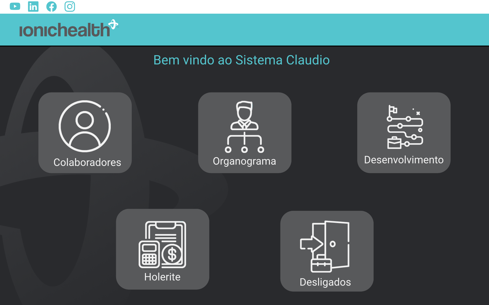
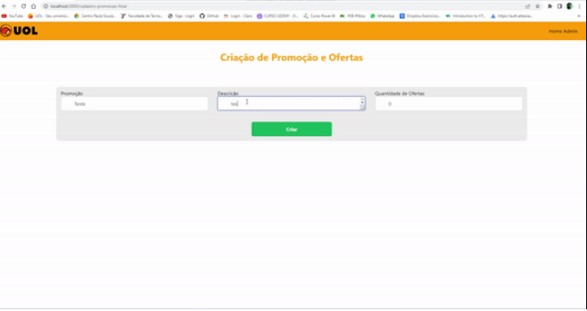
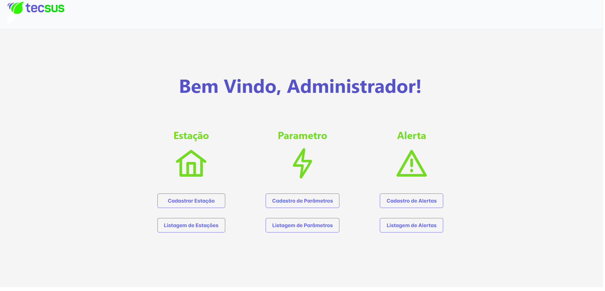
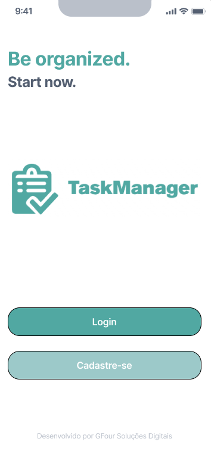
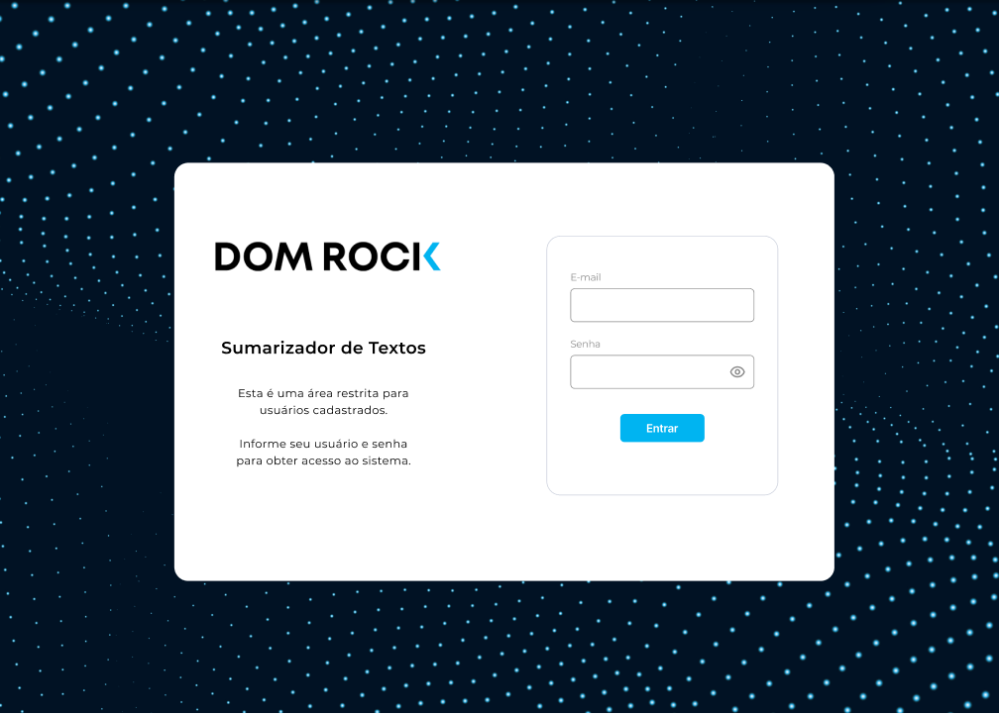

Projetos Faculdade
-

Projeto integrador 1º Semestre
Desenvolver um portal de comunicação alternativo para a FATEC durante a pandemia de COVID-19, visando aliviar a sobrecarga do portal oficial e garantir acesso contínuo a informações e serviços essenciais para alunos, professores e funcionários.
Tecnologias Utilizadas
Flask, Python e MySQL.
Minha função
Nessa Sprint eu fiquei com a parte de desing do projeto, onde desenhei telas no figma para o front-end, onde apredi HTML e CSS e a parte de fluxo de telas.
-

Projeto integrador 2º Semestre
Desenvolver uma plataforma abrangente e segura para a gestão de talentos, que atenda às necessidades da área de Recursos Humanos e Departamento Pessoal, permitindo o controle completo dos colaboradores (CLT e PJ) desde o momento da contratação, incluindo cadastro, controle de documentação, dados pessoais e outras informações relevantes, garantindo a conformidade com a LGPD e o acesso restrito aos dados sensíveis.
Tecnologias Utilizadas
JavaScrip, MySql e React
Minha função
Nessa Sprint eu fiquei com a função de P.O. conversei com cliente, e entendi onde estava a dor dele, para poder desenvolver tasks para o time de DEV, ajustei as entregas para cada sprint. Com essa experiencia aprendi sobre a parte de metodologia agil.
-

Projeto integrador 3º Semestre
Desenvolver, em parceria com os alunos do 3º DSM da Fatec São José dos Campos, alternativas disruptivas de cross-selling para a plataforma online da UOL, visando aumentar a receita da empresa e melhorar a experiência do usuário, oferecendo produtos e serviços adicionais relevantes durante o processo de compra.
Tecnologias Utilizadas
Java, Mongo e React
Minha função
Nessa Sprint fiquei no back end, foi a primeira vez que trabalhamos com JAVA e um banco não relacional (MONGODB), foi uma nova experiencia ótima, onde desenvolvi conhecimento tanto sobre uma linguagem nova, quando uma nova forma de usar um banco de dados
-

Projeto integrador 4º Semestre
Desenvolver uma estação meteorológica capaz de coletar e transmitir dados meteorológicos em tempo real, como temperatura, umidade, pressão atmosférica, direção e velocidade do vento e radiação solar, para um servidor na nuvem, disponibilizando-os para usuários e pesquisadores, com o intuito de monitorar as condições climáticas e auxiliar em projetos de pesquisa em diversas áreas.
Tecnologias Utilizadas
Python, TypeScript, C/C++, MongoDB, Mysql e React
Minha função
Nessa Sprint fiquei na função de Master, onde procurava entender as dificuldades e duvidas do time para ajuda-los, também ajudei na parte do back end.
-

Projeto integrador 5º Semestre
Desenvolver uma aplicação para auxiliar na organização e planejamento de objetivos e tarefas diárias, priorizando-as por urgência, com marcações de tempo para controle preciso, mensuração da quantidade de tarefas realizadas e apresentação mensal de resultados em um dashboard, visando otimizar a rotina pessoal e profissional dos usuários.
Tecnologias Utilizadas
TypeScript, MongoDB e React Native
Minha função
Nessa Sprint fiquei no Front-end, onde foi uma experiencia ótima pra mim, gostei muito de desenvolver para mobile.
-

Projeto integrador 6º Semestre
O objetivo deste projeto é desenvolver um sistema inovador que utiliza inteligência artificial (IA) em linguagem natural para sumarizar automaticamente grandes volumes de comentários de clientes. O sistema irá gerar resumos concisos e informativos, categorizados por diversos critérios relevantes para análise, como produto, categoria, recomendação, geografia e demografia.
Tecnologias Utilizadas
Python, PostgreSQL, EC2, PLN e React
Minha função
Nessa Sprint fiquei no Front-end e na integração do Back-end com o Front-end.